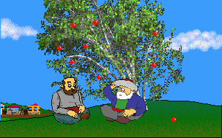
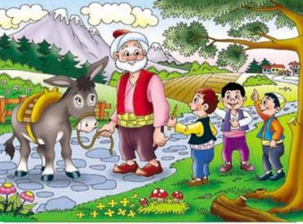
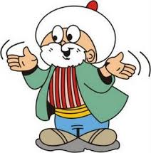
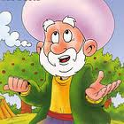
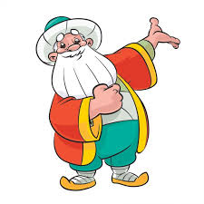

| AĞAÇTAN ÖTE YOL VAR |
|
Allah'ın İşine Bak Sen
|
|
Gürültü
|
|
Benim Öleceğimide Bil!
|
|
Fidan
|
| AĞAÇTAN ÖTE YOL VAR |
|  |
“Mahallenin çocukları Nasreddin Hoca’ya muzip bir şaka yapmak istemişler.
Planlarını kurmuşlar.
‘Hoca’yı ağaca çıkaralım.
Ayakkabılarını alıp uzaklaşarak biraz şaka yapalım, hem güler eğleniriz’ diye düşünmüşler.
Hoca’nın yoldan geçeceği saatlerde, uçurtmalarını büyükçe bir ağaca taktırmışlar.” |
| “Hoca’yı beklemeye başlamışlar.
Hoca oradan geçerken de hemen etrafını sarmışlar: – ‘Hocam uçurtmamız ağaca takıldı.
Biz çıkıp kurtaramadık.
Bize yardımcı olur musunuz?’ demişler. – ‘Hay hay’ demiş Hoca. Ayakkabılarını çıkarıp sırt çantasına yerleştirmeye başlamış.
Çocuklar: – ‘Hoca efendi onları niye yanına alıyorsun? Ağaçta pabuçları ne yapacaksın?’ demişler. – ‘Belli olmaz ki evlatlarım’ demiş Hoca; ‘Bu iyiliğime karşı Rabbim, belki bana ağaçtan öteye bir yol ikram eder.’” |
| ALLAH'IN İŞİNE BAK SEN |
|  |
Nasrettin Hoca uzun bir yürüyüşten sonra yorulmuş ve bir ceviz ağacının dibine oturarak dinlenmek istemiş. Ağacın yanında da kabak bahçesi varmış. Sonra kendi kendine:
“Şu Allah’ın işine bak! Koskocaman ağaca küçücük cevizi, incecik dala kocaman kabakları koydu.” demiş.
Biraz sonra kafasına bir ceviz düşer. Nasrettin Hoca:
“Allah’ın işine karışılmaz. Ya şimdi kafama düşen kocaman kabak olsaydı, ben ne yapardım?” demiş.
|
| GÜRÜLTÜ |
|  |
Komşusu, Nasreddin Hoca’ya sormuş :- “Hocam, neydi sizin evdeki gürültü? Dün gece evinizin önünden geçerken pald...
Komşusu, Nasreddin Hoca’ya sormuş :- “Hocam, neydi sizin evdeki gürültü? Dün gece evinizin önünden geçerken paldır küldür bir ses duydum.” - “Hiç canım” demiş Hoca, “cübbem tahta merdivenlerimizden aşağı yuvarlandı da...” - “Amma yaptın be Hocam. Cübbe o kadar gürültü çıkarır mı?” demiş komşusu. - “Sorma” demiş Hoca, “içinde ben de vardım.”
Öğüt: Küçük bir olayı büyütmeden, gülümseyerek anlatabilmeyi biz de başarabilmeliyiz.
|
| BENİM ÖLECEĞİMİDE BİL! |
|

|
Nasrettin hoca ağacın elma dalına çıkıp dalı kesmeye başlar.
Oradan geçen bir adam hey hoca ne yapıyorsun düşeceksin der.
Nasrettin hoca duymamazlıktan gelmiş 1dk sonra dal kopmuş ve
Nasrettin hoca yere düşmüş adama hey bekle sen benim ne zaman düşeceğimi bildin ne zaman öleceğimide söyle bari. :)
|
| FİDAN |
|  |
Nasrettin Hoca bir gün evinin bahçesine birkaç fidan diker. Fakat diktiği fidanları akşam söker. Ertesi sabah aynı fidanları yeniden bahçeye diker. Fidanları akşam tekrar söker. Hoca’nın yaptıklarını gören komşuları dayanamayıp yanına gelirler.
-Hocam, bakıyoruz; fidanları sabahları dikiyor, akşamları da söküyorsun. Bu nasıl iş, bir türlü akıl erdiremedik.
-Ah, hiç sormayın komşular... Baksanıza ortalık hırsızlardan geçilmiyor. Ne olur ne olmaz, insanın malı hep gözünün önünde olmalı!
|